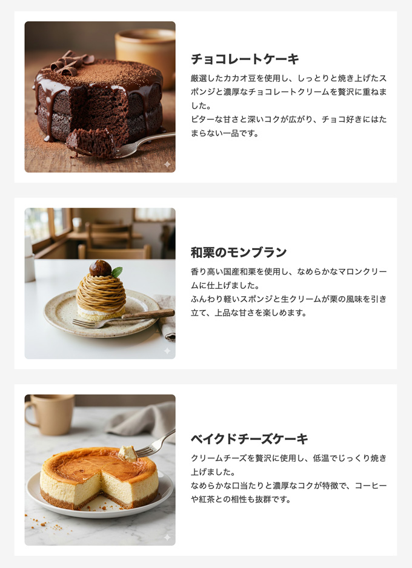

画像とテキストブロックを横並び
CSSで横並びの演習問題
- 画像と見出し・段落のテキストブロックを横並び
- sectionを３段
テキスト
チョコレートケーキ 厳選したカカオ豆を使用し、しっとりと焼き上げたスポンジと濃厚なチョコレートクリームを贅沢に重ねました。 ビターな甘さと深いコクが広がり、チョコ好きにはたまらない一品です。 和栗のモンブラン 香り高い国産和栗を使用し、なめらかなマロンクリームに仕上げました。 ふんわり軽いスポンジと生クリームが栗の風味を引き立て、上品な甘さを楽しめます。 ベイクドチーズケーキ クリームチーズを贅沢に使用し、低温でじっくり焼き上げました。 なめらかな口当たりと濃厚なコクが特徴で、コーヒーや紅茶との相性も抜群です。
完成例
- 画像は、nano bananaで作成

記述例
【HTML】
<!DOCTYPE html> <html lang="ja"> <head> <meta charset="UTF-8"> <title>コンテンツの横並び</title> <link rel="stylesheet" href="css/style.css"> </head> <body> <div class="container"> <section class="cake-box"> <img src="img/01.jpg" alt="チョコレートケーキ"> <div class="cake-text"> <h2>チョコレートケーキ</h2> <p>厳選したカカオ豆を使用し、しっとりと焼き上げたスポンジと濃厚なチョコレートクリームを贅沢に重ねました。<br>ビターな甘さと深いコクが広がり、チョコ好きにはたまらない一品です。</p> </div> </section> <section class="cake-box"> <img src="img/02.jpg" alt="和栗のモンブラン"> <div class="cake-text"> <h2>和栗のモンブラン</h2> <p>香り高い国産和栗を使用し、なめらかなマロンクリームに仕上げました。<br> ふんわり軽いスポンジと生クリームが栗の風味を引き立て、上品な甘さを楽しめます。</p> </div> </section> <section class="cake-box"> <img src="img/03.jpg" alt="ベイクドチーズケーキ"> <div class="cake-text"> <h2>ベイクドチーズケーキ</h2> <p>クリームチーズを贅沢に使用し、低温でじっくり焼き上げました。<br> なめらかな口当たりと濃厚なコクが特徴で、コーヒーや紅茶との相性も抜群です。</p> </div> </section> </div><!-- /.container --> </body> </html>
【CSS】
@charset "UTF-8"; /* -------------------------------------------- reset -------------------------------------------- */ * { margin: 0; padding: 0; box-sizing: border-box; } ul { list-style: none; } a { color: inherit; text-decoration: none; } img { max-width: 100%; vertical-align: bottom; } /* -------------------------------------------- body -------------------------------------------- */ body { background-color: #f5f5f5; color: #333; font-size: 16px; font-family: "Helvetica", "Arial", sans-serif; line-height: 1.0; } /* -------------------------------------------- layout -------------------------------------------- */ .container { width: 960px; margin: 50px auto; } /* -------------------------------------------- section -------------------------------------------- */ .cake-box { display: flex; align-items: center; gap: 30px; width: 760px; margin: 30px auto; padding: 20px; background-color: #fff; } .cake-box img { width: 300px; height: auto; border-radius: 8px; } .cake-text h2 { margin-bottom: 12px; } .cake-text p { line-height: 1.7; text-align: justify; }